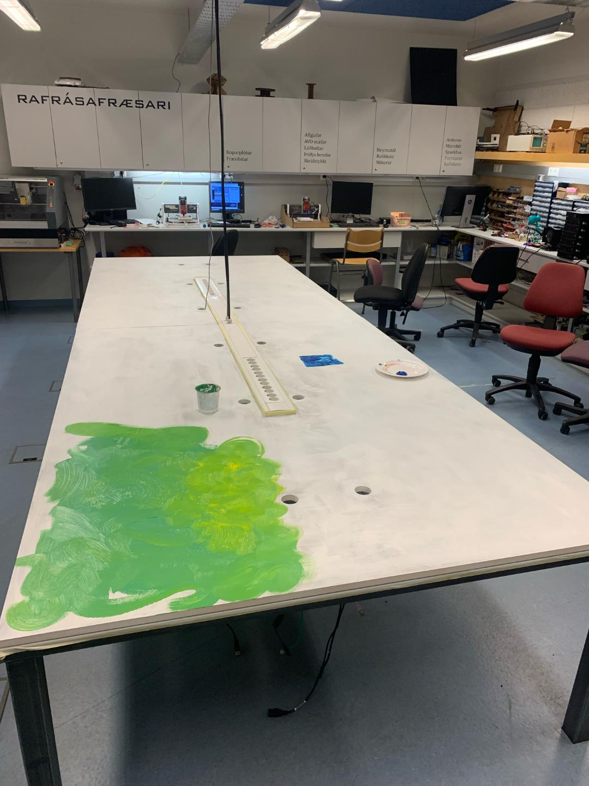
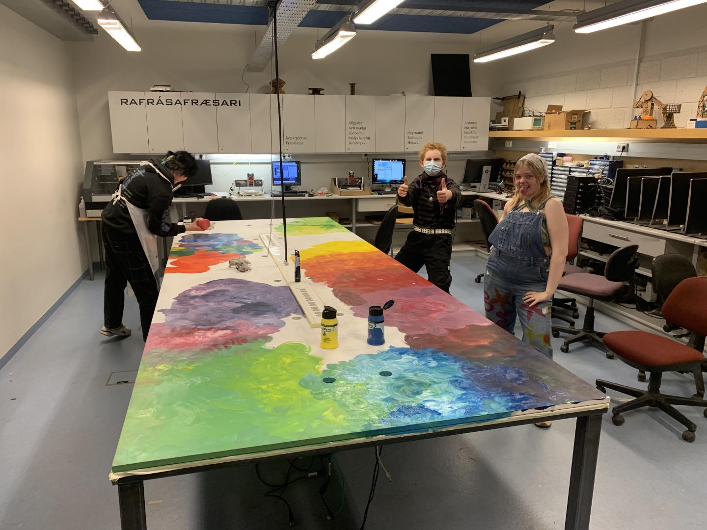
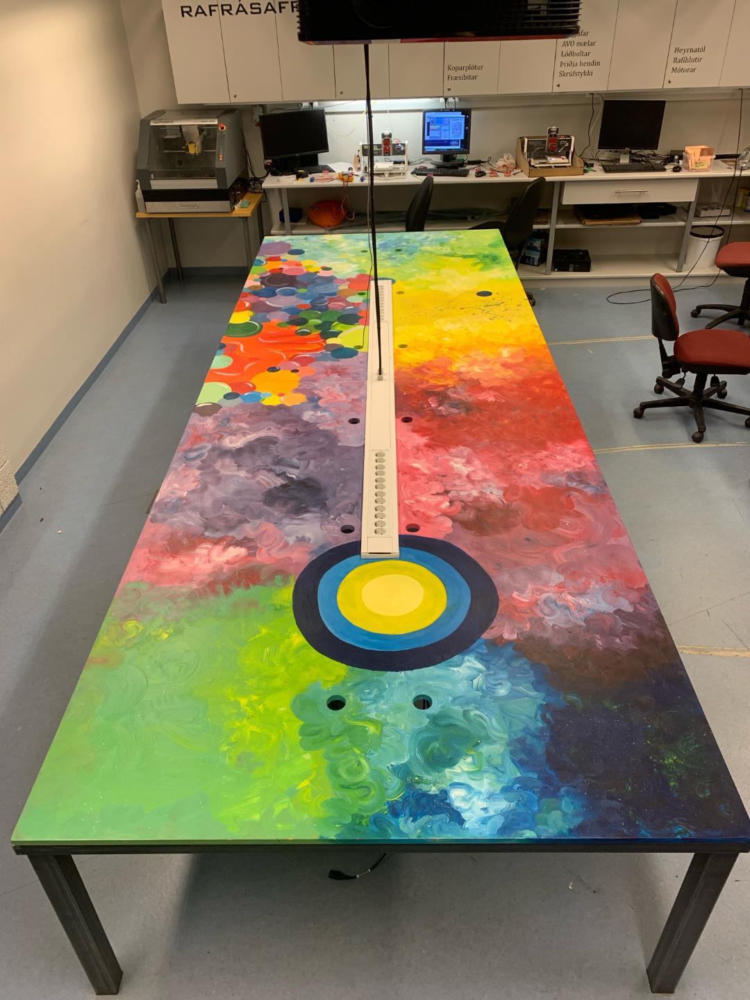

Fréttaveita Fab Lab Akureyrar
2024
Ágúst
Fleiri gleðitíðindi
2024.08.12
Nú getur Fab Lab samfélagið hér á Akureyri og nágrenni andað léttar. Samningar við Akureyrarbæ eru í höfn, reksturinn kemst vonandi í eðlilegt horf fljótlega og fyrri opnunartímar taka gildi að nýju!
Fyrsti opni tími vetrarins verður 22. ágúst!
Maí
Gleðitíðindi!
2024.05.16
Í dag barst Fab Lab Akureyri skemmtileg gjöf! Snorri Snorrason færði okkur Prusa MK3s+ prentara ásamt öllum helstu fylgi- og varahlutum. Prentarinn kemur úr hans einkaeigu og mun halda áfram að þjóna hinni óseðjandi prentþörf gesta Fab Lab Akureyrar!
Hipp hipp húrra fyrir Snorra!
Hipp hipp húrra fyrir Snorra!
Hipp hipp húrra fyrir Snorra!
Febrúar
Sorgartíðindi
2024.02.01
Vegna bágrar fjárhagsstöðu Fab Lab Akureyrar verða engir opnir tímar á næstunni. Við vinnum að því að leita lausna. Fab Lab Akureyri starfar þó áfram, ekki hika við að hafa samband í gegnum fablabak@gmail.com
Janúar
Stuttur opinn tími
2024.01.23
Vegna framkvæmda í húsnæði VMA verður opni tíminn þann 25. janúar í styttra lagi eða frá 13:00 til 16:00!
Fyrsti opni tími ársins!
2024.01.11
Í dag er fyrsti opni tími árins, ekki láta þig vanta!
Fab Lab Akureyri tekur undir með SA og verkalýðsfélgum landsins um að halda aftur af sér í gjaldskrárhækkunum. Á síðasta kaffifundi var ákveðið að hækka aðgangsgjöld um 100% en höfum við síðan ákveðið að falla frá svo mikilli hækkun og hækka einungis um 75%.
Gamla gjaldið: 0 ÍSK.
NÝJA GJALDIÐ: 0 x 1.75 = 0 ÍSK!
2023
Desember
Opnir tímar í desember!
2023.12.6
Ekki láta síðustu opnu tíma ársins fara fram hjá þér!
Fimmtudagur 7. desember frá 13:00 - 18:00
Fimmtudagur 14. desember frá 13:00 - 18:00
Laugardagur 16. desember frá 10:00 - 15:00
Þriðjudagur 19. desember frá 10:00 - 15:00
Nóvember
2023.11.27
RÚV
Dagana 18. - 26. nóvember var Evrópska nýtnivikan. Í tilefni þessa kom fréttastofa RÚV í heimsókn til okkar í opinn tíma. Tíminn var vel settur og ræddi fréttamaður við gesti og verkefnastjóra smiðjunnar, Jón Þór Sigurðsson. Til viðbótar við þau dæmi og verkefni sem rædd voru í fréttinni, má nefna að á síðsta fimmtudag fengu gestir smiðjunnar aðstoð við og unnu að eftirfarandi verkefnum:
- Gera við mótorstýringu fyrir hlaupahjól (Rafrásahönnun og fræsing)
- Festing fyrir veiðibúnað á kajak (3D hönnun og 3D prentun)
- Vatnabretti fræst úr timbri (Hönnun og fræsing með stórum fræs)
- Hönnun og merkingar með bæði vínil og laser.
Október
Rándýr heimsókn
2023.10.05
Í dag fengum við heimsókn frá hópi fjármálastjóra framhaldsskóla, en þeir voru hér í VMA að skoða sig um.
Þau voru bersýnilega hrifin af Fab Lab, enda varla annað hægt!
Vilt þú kíkja í heimsókn? Verið velkomin!
September
Þorir þú að nota takkann??
2023.09.14
Gestir smiðjunnar hafa líklega flestir tekið eftir þessu furðulega tóli sem komið er upp á vegg hjá okkur.
Þessi sveif er framlag okkar í FMCU kerfið sem er í vinnslu hjá alþjóðlega Fab Lab tengslanetinu. Markmiðið að sýna virkni Fab Lab smiðjanna á skemmtilegan máta.
Ykkur er velkomið að prófa!
Ágúst
Semi-konungleg heimsókn
2023.08.29
Á dögunum kíktu þau Elíza og Guðni í heimsókn til okkar í Fab Lab. Það var ánægjulegt að sjá þau, eins og alltaf, og höfðu þau gaman að því að fikta og skoða, t.d. FMCU netkerfið sem er í vinnslu og nýttu þau tækifærið til að flagga merki knattspyrnuklúbbs á Englandi.
Þegar þau höfðu lært allt um Fab Lab, gátu þau haldið heimsókn sinni um Akureyri áfram, sjá nánar:
Takk fyrir komuna Hr. Forseti, þú ert velkominn í opna tíma, alla fimmtudaga á milli 13:00 og 18:00.
Loksins loksins!
Nú er sumarfríið loksins á enda og fyrsti opni tíminn verður þann 17. ágúst á hefðbundnum tíma, eða á milli 13:00 og 18:00.
Sjáumst hress og kát!
Júní
Sumarið er komið!
Og Fab Lab Akureyri er farið í sumarfrí!
Við sjáumst hress og kát næsta haust, fyrsti opni tíminn verður 17. ágúst.
Hafið það gott í sumar!
Maí
Vistlegri vistarverur!
2023.05.19
Rétt fyrir lokaprófin stórbættu nemendur af listnámsbraut rýmið okkar með því að mála sína eigin abstract hönnun á tölvuborð smiðjunnar.



Listamennirnir heita:
- Minna Kristín Óskarsdóttir
- Felix Hrafn Stefánsson
- Ásdís Fanney Aradóttir
- Erik Birkir Bergman Ólason
- Arnfríður Kría Jóhannsdóttir
- Lilja Karlotta Óskarsdóttir
Við þökkum þeim kærlega fyrir framlagið!
Vorið er komið og grundirnar gróa
2023.05.16
Síðustu opnu tímarnir fyrir sumarfrí eru sem hér segir:
17. maí (miðvikudagur, v/uppstigningardags)
25. mai (fimmtudagur)
1. júní (fimmtudagur)
8. júní (fimmtudagur)
15. júní (fimmtudagur)
Uppstigningardagur
2023.05.15
Vegna uppstigningardags færum við opna tímann yfir á miðvikudaginn 17. maí.
Kaffi á könnunni, gleði og hamingja!
Fab Lab Bootcamp
2023.05.04
Vikuna 8.-12. maí verður lokað í Fab Lab Akureyri vegna samkomu Fab Lab Íslands, sem þetta árið verður haldið á Neskaupstað.
Opni tíminn 11. maí fellur því niður.
Apríl
Verkefni nemenda
2023.04.25
Margt hefur verið brasað í Fab Lab Akureyri undanfarið. Nýverið unnu fjöldinn allur af nemendum í frumkvöðlafræðum að verkefnum sínum. Enn aðrir bjuggu til búninga og skraut fyrir Dimission 2023.
Nú eru nemendur í óða önn að klára lokaverkefni sín, en þar má nefna nemendur af húsasmíðabraut, rafvirkja- og rafeindavirkjun og vélstjórn.
Mars
Maskínusmíði
2023.03.31 - 2023.04.02
Helgin 31. mars til 2. apríl var tileinkuð "Machine week" í Fab Academy. Í þessari viku er ætlast til þess að Fab Academy nemendur nýti sér það sem þau hafa lært til að smíða sína fyrstu vél. Hönnunin er alfarið á þeirra ábyrgð og mörg virkilega skemmtileg verkefni hafa komið út úr henni.
Útsendari Fab Lab Akureyrar, ásamt Þórarni, hélt til Reykjavíkur til að aðstoða íslensku nemenduna í Fab Academy 2023 við smíð á maskínu, en þau eru:
Virkilega skemmtilegur og fjölhæfur hópur, en þau smíðuðu tepoka-dýfingar-vél en hún þyrfti að vera til á öllum betri heimilum.
Stykkorð og hlekkir:
-
Laserskurður
-
Fræsing
-
Forritun
-
Þrívíddar hönnun og prentun
-
Rafrásahönnun og fræsing
-
Lóðun íhluta
-
Samvinna
-
Gleði og hamingja!

Ráðuneytishittingur í Reykjavík
2023.03.22
Nýverið hitti Fab Lab Akureyri ráðuneyti vegna stöðu og framtíðar Fab Lab á Íslandi.
Frétt ráðuneytisins má lesa hér: https://www.stjornarradid.is/efst-a-baugi/frettir/stok-frett/2023/03/21/Vel-sott-vinnustofa-um-stodu-og-framtid-Fab-Lab-smidja-/
Það er spennandi að sjá hvað kemur út úr þessari vinnu. Meira um það síðar!
Opnir tímar í mars og apríl
2023.03.09
Allir opnir tímar eru með eðlilegum hætti í mars, þ.e.a.s. alla fimmtudaga frá 13:00 til 18:00.
Í apríl verður smá breyting á en þá verða opnir tímar á eftirfarandi dögum.
6. apríl á milli 10:00 - 16:00 (Skírdagur)
13. apríl á milli 13:00 - 18:00
18. apríl á milli 13:00 - 18:00
27. apríl á milli 13:00 - 18:00
Febrúar
Tölvustýrður fræsari (CNC) - Námskeið
Mikil stemning var á CNC námskeiðinu sem haldið var á dögunum. Einn þátttakandinn hannaði og fræsti þennan fína lóðunarplatta!
Munið að í Fab Lab er hægt að gera (næstum því) allt!
Rafrása- og örtölvunámskeið
2023.02.21 12:27
Síðastliðna helgi lauk fyrsta rafrása- og örtölvunámskeiðinu á árinu.
Þátttakendur voru hæstánægðir með afraksturinn, sína eigin rafrás með örtölvu!
Hollendingar í heimsókn
2023.02.02 13:15
Heimsóknir hópa í Fablab-ið eru algengar, en í dag fengum við til okkar hressan hóp kennara frá Hollandi. Þeir voru í heimsókn hér á Akureyri að kynna sér öll menntastig og þá aðstöðu sem hér í boði.
Þau voru afskaplega kát heimsóknina hingað norður og efast ég ekki um að Fablab hafi verið hápunktur ferðarinnar!

Janúar
Nýjunar og námskeið
2023.01.26
Nýjastu íhlutir til rafrásagerða og forritunar bárust smiðjunni rétt í þessu, en það eru XIAO RP2040 og XIAO ESP32C3.
Þessir kubbar verða svo nýttir á einu af komandi námskeiðum hér í Fablab, en á næstunni eru eftirfarandi námskeið:
Fablab á ferð og flugi
Dagana 12. - 16. janúar sækir Árni leiðbeinendanámskeið í Amsterdam, nánar tiltekið í Fablab Waag sem staðsett er í þessu stórmerkilega húsi.
Á námskeiðinu er farið yfir það allra nýjasta í tæknimálum í Fablab heiminum, sem og undirbúningur fyrir leiðbeinendur í Fab Academy. Þetta er í fyrsta skipti sem Fablab Akureyri tekur þátt í Fab Academy sem kennslunóða, en nemandi í Reykjavík tekst á við þessa skemmtilegu áskorun.
Meira um það síðar!
Við minnum á að fyrsta opna hús ársins verður á morgun, 12. janúar!
2022
Desember
Aðventuopnanir
Við bætum við opnum tímum eftirfarandi daga:
10. desember á milli 10:00 - 14:00
12. desember á milli 13:00 - 18:00
20. desember á milli 13:00 - 18:00
Hefðbundnir opnir tímar eru dagana:
8. desember á milli 13:00 - 18:00
15. desember á milli 13:00 - 18:00
Lokað verður frá og með 21. desember.
ATH: Fyrsti opni tíminn árið 2023 verður 12. janúar
Nóvember
Ný heimasíða!
2022.11.14 15:30
Ný heimasíða Fab Lab Akureyrar fer í loftið!
Síðan er skrifuð í Markdown í MkDocs kerfinu og hýst á Github Pages.